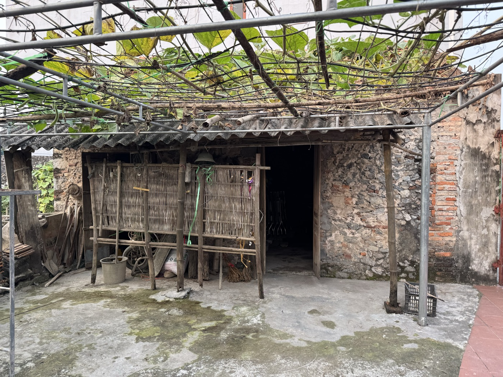

Chủ hộ
Nguyễn Hữu Lệnh
Người đại diện điểm đến

Nhà cổ Hữu Lệnh là một trong những không gian tiêu biểu còn lưu giữ được kiến trúc và nếp sinh hoạt truyền thống của người Mường tại Mường Cốc. Ngôi nhà mang nét mộc mạc đặc trưng của vùng bán sơn địa Bắc Bộ với vật liệu tự nhiên như gỗ, tre, mái lá và các vật dụng sinh hoạt truyền thống vẫn được bảo tồn trong đời sống hàng ngày.
Không chỉ là nơi sinh sống của gia đình nhiều thế hệ, Nhà cổ Hữu Lệnh còn phản ánh rõ nét đời sống văn hóa, tập quán sinh hoạt và tinh thần gắn bó với thiên nhiên của cộng đồng người Mường địa phương.
Du khách khi đến đây có thể cảm nhận không gian làng quê yên bình, tìm hiểu kiến trúc nhà ở truyền thống và lắng nghe những câu chuyện đời sống bản địa từ chính người dân địa phương.
| Dịch vụ | Nội dung |
|---|---|
| Tham quan nhà cổ | Giới thiệu kiến trúc và lịch sử ngôi nhà |
| Trải nghiệm văn hóa | Giao lưu đời sống cùng người dân |
| Chụp ảnh check-in | Không gian truyền thống – làng quê |
| Trải nghiệm nghề truyền thống | Theo mùa vụ / thời điểm |
| Ẩm thực địa phương | Phục vụ theo đặt trước |
| Đón khách đoàn | Có thể phục vụ nhóm nhỏ và đoàn trải nghiệm |
Nhà cổ Hữu Lệnh hướng tới trở thành điểm trải nghiệm văn hóa cộng đồng mang tính chân thực, thân thiện và bền vững; góp phần bảo tồn giá trị văn hóa người Mường và tạo sinh kế cho cộng đồng địa phương thông qua hoạt động du lịch cộng đồng.